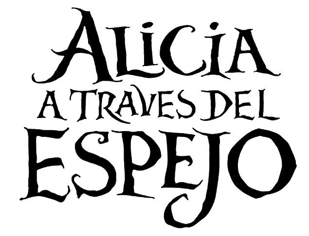

Alicia Kingsleigh ha pasado los últimos años navegando en el "Maravillas", barco que habría heredado de su padre. En su regreso a casa, Alicia descubre que su futuro depende ahora de Lord Hamish, hombre al que habría rechazado una propuesta de matrimonio hace unos años. En medio de este lío es Absolem, convertido en mariposa, quién lleva a Alicia de regreso al país de las maravillas pasando a través de un espejo mágico. La nueva misión de Alicia será ayudar al sombrerero, pues ha dejado de ser él mismo. En esta aventura tendrá que emprender un largo viaje, reencontrarse con amigos y enemigos, todo esto antes de que se acabe el tiempo.